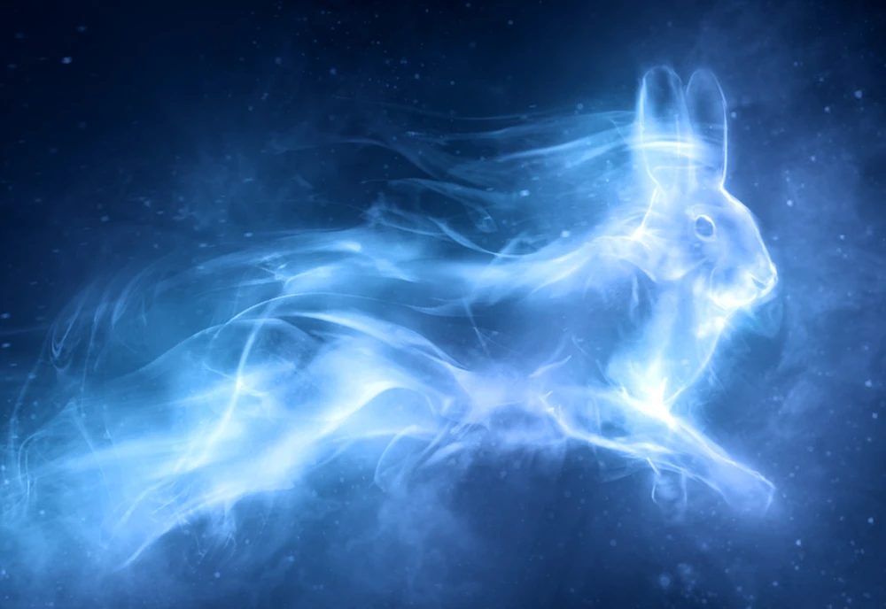
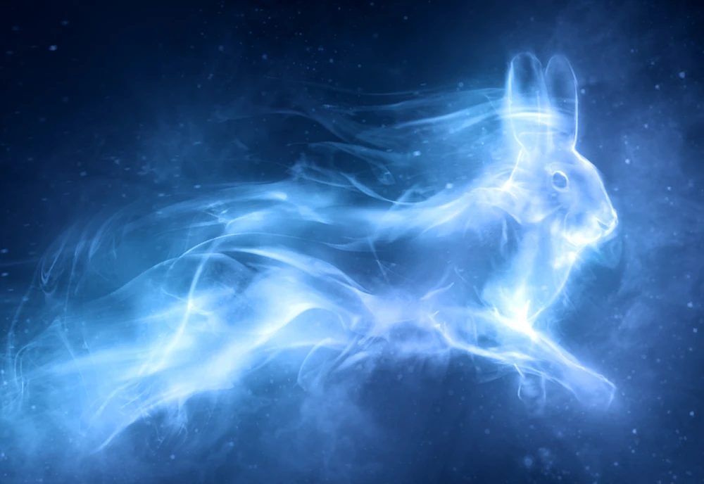

My Hogwarts Highlights
About Me
 

Hello, my name is Rawan! I am a member of the house of Hufflepuff, one of the four houses of Hogwarts. This house, founded by Helga Hufflepuff, values loyalty, patience, hard work, and dedication. My house's mascot is a badger, and my house's signature colors are black and yellow. The patronus (or defensive spell that takes the appearance of an animal) I connect with most is the brown hare, which is associated with patience, intelligence, and shyness. If I really was a student at Hogwarts School of Witchcraft and Wizardry, I would be most interested in Charms (or spellcasting) and broom flying.
Ultimate Faves


These are my ultimate favorites from the Harry Potter universe! My top characters are George and Fred Weasley, identical twin brothers known for their brilliantly mischievous pranks and the founders of their joke shop Weasley's Wizarding Wheezes in the streets of Diagon Alley. My favorte wand belongs to Hermione Granger, I absolutely love the vine pattern since I am a big fan of anything with plant designs. It's hard to choose my favorite book out of all 7, but my top two are "Harry Potter and the Goblet of Fire" and "Harry Potter and the Order of the Phoenix". Not only are both books packed with exciting details about Harry and his friend's adventures, entertaining and captivting the reader, but also mark a high point for one of the most important arcs of the series: the return of the evil wizard Voldemort.
Wizarding Adventures

My most memorable wizarding adventures have been my trips to Harry Potter World in both Universal Studios Hollywood and Orlando. The experience of immersing myself in the magical world that I've grown to love and form strong connections with over the years was exciting and heart-warming. I particularly enjoyed the size of Harry Potter world in Orlando since it includes two giant halves of one whole spread across the two parks (such as the infamous streets of Diagon Alley) and even the opportunity to ride the Hogwarts Express train in between the parks! I also really liked trying the butterbeer, a sweet and fizzy non-alcoholic drink from the series with a butterscotch foam on top.